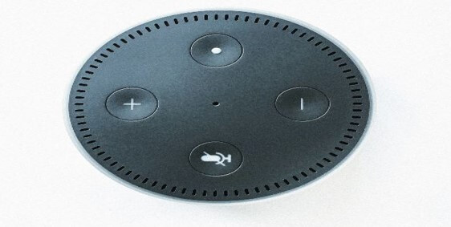

LA INTELIGENCIA ARTIFICIAL, CLAVE EN EL IOT (DE NUEVO)

La inteligencia artificial contribuirá al análisis de datos del IoT.
Para sacar el máximo provecho de los datos, o para siquiera entender a un
nivel básico cómo funcionan las infraestructuras modernas, es imprescindible
la asistencia de sistemas informáticos con capacidades de inteligencia
artificial. Los grandes proveedores de servicios en la nube, como Amazon,
Microsoft y Google, apostarán cada vez el desarrollo de sus capacidades de
inteligencia artificial como herramienta competitiva. Cada vez existen más
startups tratando de ampliar su cuota de mercado a través de algoritmos de
inteligencia artificial capaces de aprovechar las posibilidades que ofrecen
las tecnologías de machine learning y deep learning para aprovechar mejor el
creciente volumen de datos al que tienen acceso.
La inteligencia artificial es el ingrediente fundamental para digerir esta
ingente cantidad de datos disponible hoy en día y permitir a las empresas
extraer todo el valor que atesoran. La inteligencia artificial contribuirá
al análisis de datos del IoT en las siguientes áreas: preparación de datos,
descubrimiento de datos, visualización de datos, precisión de series temporales
de datos, analíticas predictivas y avanzadas, ubicación geoespacial en tiempo
real (datos logísticos).
CRECIMIENTO EN DATOS Y DISPOSITIVOS CON MÁS INTERACCIÓN HUMANO-DISPOSITIVO.

A finales de 2019 existirán cerca de 3600 millones de dispositivos conectados activamente
a internet y utilizados en tareas cotidianas. La llegada del 5G contribuirá a abrir la
puerta a muchos más dispositivos y a un volumen de tráfico de datos infinitamente mayor.
Además, el creciente ritmo de adopción de dispositivos de computación periférica (edge computing)
va a permitir a las empresas procesar datos de una manera mucho más veloz y cercana a los puntos
de acción.
LAS INTERFACES DE USUARIO POR VOZ (VOICE USER INTERFACE) SERÁN UNA REALIDAD

Los gigantes del sector compiten por asegurarse una posición dominante en el
incipiente mercado del IoT. Los asistentes digitales, como HomePod, Alexa,
Siri y Google Assistant, son las plataformas tecnológicas sobre las que se
desarrollará la siguiente hornada de dispositivos inteligentes y estas empresas
pugnan por hacerse un hueco en el día a día de los consumidores, que les permitirán
seguir incorporando dispositivos a sus vidas de una manera cómoda y sencilla.
La voz representa el 80% de nuestras comunicaciones diarias. Como en las películas de
ciencia ficción, hablar con robots es la manera más normal de comunicarse con ellos.
El uso de la voz para configurar dispositivos, modificar nuestras preferencias, ejecutar
comandos y recibir resultados se convertirá en la norma, no sólo en los hogares y fábricas
inteligentes, sino en las aplicaciones que incorporen nuestros automóviles y wearables.